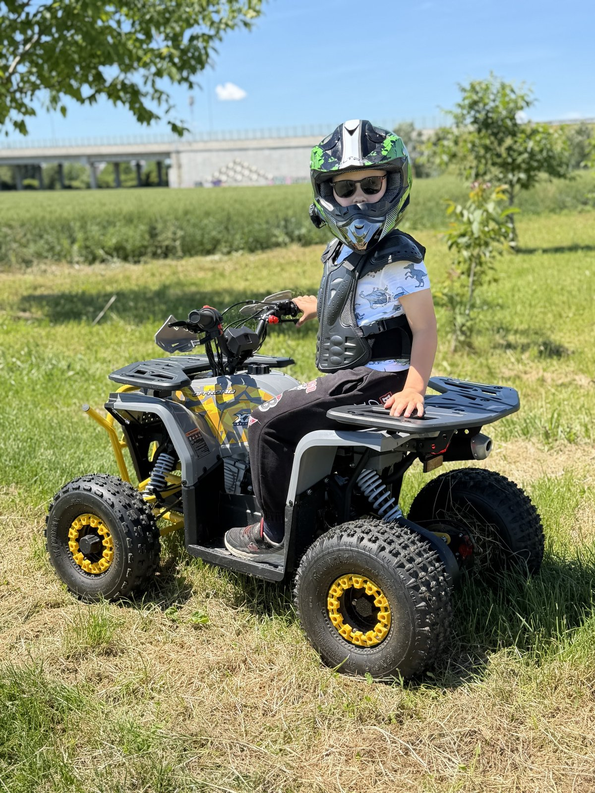
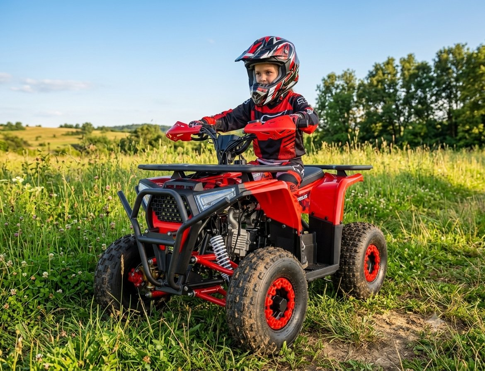
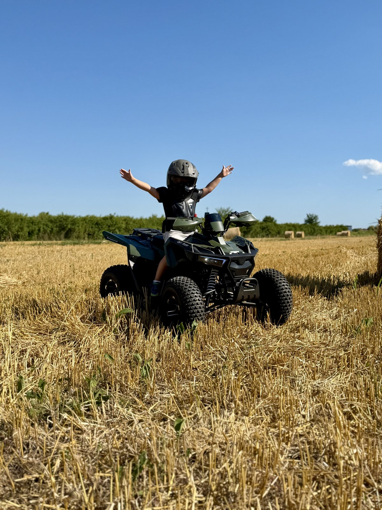

Manji Midi Sirius 90cc za djecu od 5 do 10 godina. Veći XTL Tyrannosaurus 125cc za tinejdžere 12+ i odrasle početnike.
Najsigurniji i najsnažniji benzinski ATV za male avanturiste. Autentičan osjećaj vožnje, robusna snaga i maksimalna kontrola za roditelje.


Midi Sirius 90cc nije samo igračka. Pažljivo konstruirano mini off-road vozilo koje nudi vrhunske performanse u sigurnim okvirima. Pokretan pouzdanim 4-taktnim motorom, pruža autentičan osjećaj vožnje na livadama i šumskim putevima.
| Tip motora | 90 cc, 4-taktni, jednocilindrični, zračno hlađenje |
| Sustav paljenja | Električni start (12V / 5Ah baterija) |
| Mjenjač | Automatski + rikverc (hod unatrag) |
| Pogon | Lančani pogon |
| Maksimalna brzina | oko 55 km/h |
| Dimenzije (D × Š × V) | 1200 × 780 × 830 mm |
| Visina sjedala | 590 mm (ergonomski prilagođeno djeci) |
| Međuosovinski razmak | 810 mm |
| Gume | Prednje 15×5-6 · stražnje 15×6-6 (off-road profil) |
| Kapacitet spremnika | 1,6 litara |
| Težina vozila | Neto 81 kg · bruto (s pakiranjem) 90 kg |
| Dodatna oprema | LED svjetla, truba, daljinski upravljač, sigurnosna traka, oklopi kotača |
Vrhunski poluautomatski ATV za tinejdžere i odrasle. Moć, kontrola i adrenalin — čista terenska akcija bez kompromisa.

Ako tražite quad koji donosi čistu terensku akciju bez kompromisa, XTL Tyrannosaurus 125cc je stvoren za vas. Pruža vrhunsku zabavu i stabilnost na svim podlogama — od šljunka i blata do šumskih puteva i pijeska.
Dizajniran prvenstveno za zahtjevne tinejdžere od 12+ godina i odrasle vozače, ovaj ATV nudi idealnu kombinaciju sirove snage, napredne kontrole i maksimalne udobnosti.
| Tip motora | 125 ccm, 4-taktni, jednocilindrični, zračno hlađenje |
| Sustav paljenja | Električni start |
| Mjenjač | Poluautomatski 3+1 (3 brzine naprijed + rikverc) |
| Pogon | Lančani pogon |
| Maksimalna brzina | do 60 km/h |
| Gume (dimenzije) | Prednje 19×7-8" · stražnje 18×9.5-8" (duboki off-road profil) |
| Udaljenost od tla | oko 120 mm |
| Visina sjedala | 700 mm |
| Dimenzije vozila | 1470 × 1040 × 950 mm |
| Težina quada | Neto 110 kg · bruto (u pakiranju) 128 kg |
| Dodatna oprema | Dvostruki sportski ispuh, digitalni brzinomjer, štitnici za ruke, daljinski upravljač |
Rezervirajte pola ili cijeli dan. Roditelji na velikim quadovima, djeca na svojim.